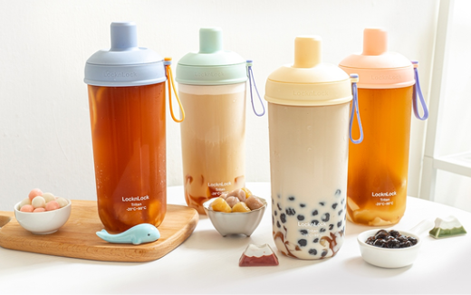
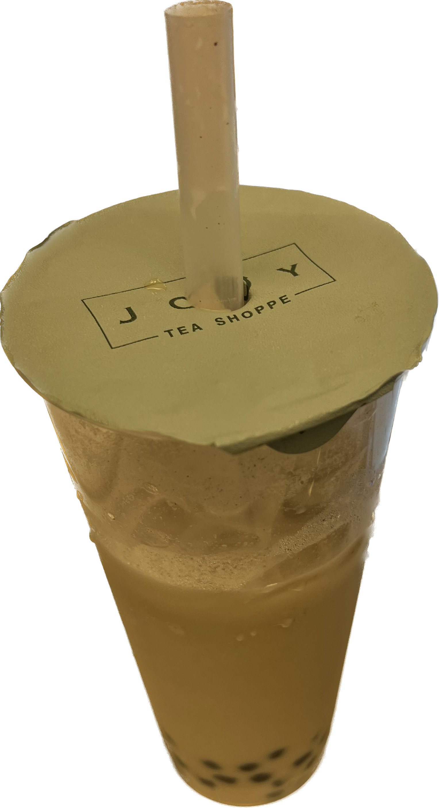

Bubble tea is usually served in a tall disposable cup with a wide straw.
The straw allows you to enjoy the chewy tapioca pearls and other toppings along with the tea.
However, the design of the cup, the straw, or the bags varies between the stores.
Did you know that plastics cups are banned in the majority of cities in Taiwan?
Began last december, single used plastic cups are now banned at beverage stores in the captial of Taiwan, Taipei, and the city, New Taipei.
According to the Environmental Protection Department, beverage shops that contravene the rule would risk a fine of NT$1,200 to NT$6,000,
which can be imposed repeatedly if contraventions continue,
citing the Waste Disposal Act (廢棄物清理法).(staff writer, Taipei Times)
Others cities such as Taoyuan and Kaohuiung are said to follow with plastic reduction rule before the end of 2023.
Beverage shops in Taipei and New Taipei now distributes takeout drinks with paper cups.
To further enforce waste prevention, most beverage stores also offer a NT$5 discount for customers who bring their own reusable cups.
I was able to withness and be affected by the distribution of plastic utencils every summer when I go back to Taiwan.
Thus, I hope that America can soon follow for being more than 250 times larger than Taiwan in size and plastic production.
The emergance of bubble tea is causing an increase in plastic waste while coffee shop is already a common distributor of plastic.
However, I have hope for the advocacy of paper boba cups with the existence of Teazzi
As seen from my entry 2, my oolong boba milktea was delievered to me in a paper cup.
Teazzi is one of the only boba stores in NYC that uses paper cup for both cold and hot drinks.
But for some reason, plastic cups are still used for their medium-sized drinks.
In relation, I believe that the health regulations of drinks in America needs to be elavated.
An recent event that could've promoted the use of clear packaging, thus plastic materials for to-gos,
could've been the discovery of mold in Calpri Sun by an indiviual in 2012.
Since 2014, the company of Calpri Sun: Kraft, has the bottom of their foil pouch to have a clear plastic bottom.
Thus, the public would have more faith in banning plastic drink containers
if food regulations were further enforced.
But meanwhile, most coffee and beverage store continues to utilize plastics.
Disappointingly, the famous bubble tea brand from Taiwan, fiftylan, uses plastics cups and sealing as packaging.
left: fiftylan boba in Taiwan VS right: fiftylan boba in America
As sellers, I could see that clear packaging also allows the showcase of visuals.
Bubble tea brands would reasonate with that fact as marketing technique to showcase the addition of toppings in drinks.
There has also been a trend of reusable cups specially designed for bubble tea in Taiwan.
The cups are usually around 700ml with innovative design and large implemented straw for drinks with toppings.

As for the material of the cup's sealing, the majority are still made of plastics.
Even in Taiwan, there aren't any rule restricting the material of drink's sealings yet.
Though, a boba store named JOOY Tea that recently opened this year actually utilize aluminum sealing!
I think it's great since aluminum are recyclable so it is more environment friendly.
But from a consumer's convenience lens, the durability of the sealing is still questionable.

With that, we will talk about the logo placement for different bubble tea stores in the next entry.